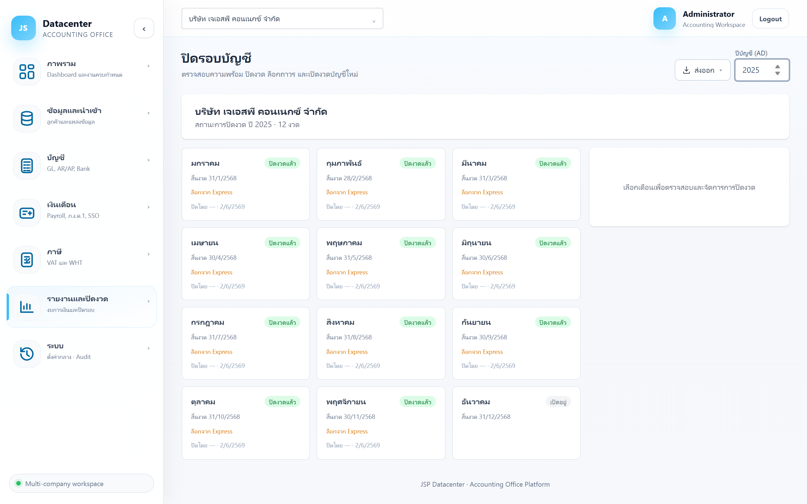

คู่มือการใช้งาน › รายงานและปิดงวด › ปิดรอบบัญชี
ปิดรอบบัญชี
ตรวจสอบความพร้อมของแต่ละงวด ปิดงวด ล็อกถาวร และเปิดงวดใหม่ — กลไกที่ทำให้ตัวเลขที่ปิดแล้ว ไม่เปลี่ยนย้อนหลัง
ทำไมต้องปิดงวด
งบที่ยื่นไปแล้วต้องพิสูจน์ได้ว่ายอดตรงกับตอนยื่น การปิดและล็อกงวดทำให้ยอดถูกตรึงไว้ แม้ Express จะถูกแก้ภายหลัง
1. การเข้าใช้งาน
- เลือกบริษัทลูกค้า ที่แถบด้านบน (ไม่เลือกจะจัดการไม่ได้)
- เปิดเมนู รายงานและปิดงวด → ปิดรอบบัญชี
- ตั้ง ปีบัญชี (ค.ศ.) มุมขวาบน
- คลิกการ์ดเดือน ที่ต้องการ — แผงตรวจสอบจะขึ้นทางขวา
2. อ่านการ์ดเดือน

| สถานะ | ความหมาย |
|---|---|
| เปิดอยู่ | ยังแก้ไข/นำเข้าข้อมูลของงวดนี้ได้ |
| ปิดงวดแล้ว | ปิดแล้ว แต่ยัง เปิดใหม่ได้ ถ้าจำเป็น |
| ล็อกถาวร | ตรึงถาวร — ใช้เมื่อยื่นงบไปแล้ว |
| ข้อมูลบนการ์ด | ความหมาย |
|---|---|
| สิ้นงวด | วันสิ้นงวดของเดือนนั้น (แสดงเป็น พ.ศ.) |
| ล็อกจาก Express | งวดนี้ถูกล็อกที่ฝั่ง Express แล้ว — เป็นข้อมูลประกอบ ไม่ใช่สถานะของระบบนี้ |
| ปิดโดย — · วันที่ | ใครปิดและปิดเมื่อไร (เก็บเป็นหลักฐาน) |
3. แผงตรวจสอบความพร้อม
คลิกการ์ดเดือนแล้วระบบจะไล่ตรวจรายการที่ควรพร้อมก่อนปิดงวด แล้วแสดงผลเป็นรายข้อ
| ระดับความรุนแรง | ความหมาย |
|---|---|
| ผ่าน | เงื่อนไขนั้นเรียบร้อย |
| เตือน | ควรตรวจแต่ยังปิดงวดได้ |
| ไม่ผ่าน | ติดขัดจริง — ปุ่มปิดงวดจะกดไม่ได้จนกว่าจะแก้ |
อ่านผลอย่างไร
ระบบเปิดปุ่ม “ปิดงวด” ให้เฉพาะเมื่อผ่านเงื่อนไขบังคับครบ — ถ้าปุ่มกดไม่ได้ ให้ไล่แก้รายการที่ขึ้นว่าไม่ผ่านก่อน อย่าพยายามข้าม
4. ปุ่มดำเนินการ
| ปุ่ม | ทำอะไร / ใช้เมื่อไร |
|---|---|
| ปิดงวด | ปิดงวดที่เลือก — ใช้เมื่อตรวจสอบผ่านและงานของเดือนนั้นเสร็จแล้ว (ยังเปิดใหม่ได้) |
| ล็อกถาวร | ตรึงงวดถาวร — ใช้หลังยื่นงบ/แบบภาษีเรียบร้อยแล้ว |
| เปิดงวดใหม่ | ยกเลิกการปิด กลับมาแก้ไขได้ — ปุ่มสีแดงเพราะเป็นการย้อนสถานะ |
“ล็อกถาวร” ควรทำเมื่อยื่นแล้วเท่านั้น
เป็นสถานะที่ตั้งใจให้ย้อนยาก — ปิดงวดธรรมดาพอสำหรับงานประจำเดือน เก็บการล็อกไว้ใช้กับงวดที่ยื่นงบและแบบภาษีไปแล้วจริง
การเปิดงวดใหม่ถูกบันทึกไว้
ทุกการปิด/เปิดถูกเก็บพร้อมชื่อผู้ทำและเวลาในประวัติการใช้งาน — ถ้าจำเป็นต้องเปิดงวดที่ปิดไปแล้ว ควรบันทึกเหตุผลไว้ด้วย
5. ลำดับการปิดงวด
- ปิดงวดรายเดือน เมื่อยื่น ภ.พ.30 / ภ.ง.ด. / ปกส. ของเดือนนั้นครบ
- ปลายปี — ทำรายการปรับปรุงที่ กระดาษทำการปิดงบ ให้ครบ
- ออกงบ ที่ งบการเงิน และตรวจว่างบสมดุล
- คำนวณและยื่น ภ.ง.ด.50
- บันทึกชุดรายงาน ที่ ชุดรายงานงบ แล้วอนุมัติ/ล็อก
- ล็อกถาวรทุกงวดของปีนั้น
6. ปัญหาที่พบบ่อย
| อาการ | สาเหตุและวิธีแก้ |
|---|---|
| ปุ่ม “ปิดงวด” กดไม่ได้ | ยังมีรายการตรวจสอบที่ไม่ผ่าน — ไล่แก้ตามรายการในแผงตรวจสอบ |
| เลือกเดือนแล้วไม่มีอะไรขึ้น | ยังไม่ได้เลือกบริษัท หรือกำลังโหลดผลตรวจสอบอยู่ |
| นำเข้าข้อมูลของงวดที่ปิดแล้วไม่ได้ | ถูกต้องตามการออกแบบ — ถ้าจำเป็นให้เปิดงวดใหม่ก่อน แล้วปิดกลับหลังแก้เสร็จ |
| งวดขึ้น “ล็อกจาก Express” แต่ในระบบยังเปิดอยู่ | เป็นคนละสถานะกัน — ล็อกฝั่ง Express ไม่ได้ปิดงวดในระบบนี้ให้อัตโนมัติ |
| อยากปิดทั้งปีทีเดียว | ต้องปิดทีละงวด เพราะแต่ละงวดตรวจเงื่อนไขแยกกัน |
ถัดไป